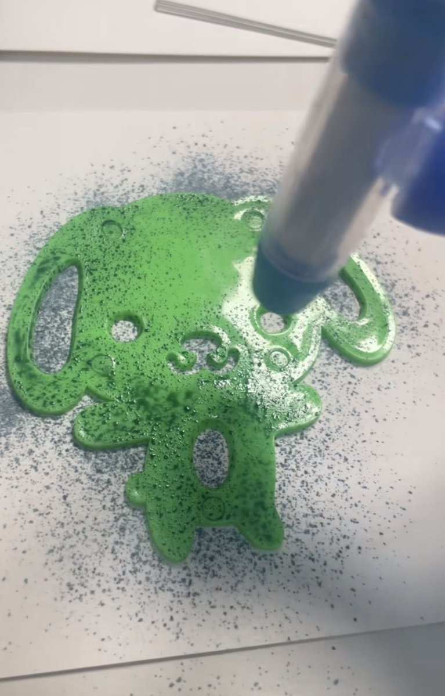

小学的时候总在电视上看到喷喷笔的广告，想起妈妈总在耳边说的钱要省着花，没好意思向家里要钱买。 到了学校同学已经在美术课上用上了喷喷笔，我们都眼馋地站在旁边。好面子的我撒谎说我的在家里妈妈不让带来，那个同学好心把她的笔借给我玩，我却不知道怎么操作，只会用水彩笔的另一头把模具的空隙填满，手按着的小狗好像在嘲笑我，站在旁边同学的目光让我浑身冒汗。我生怕他们看出来我根本没有这种喷喷笔，最后灰溜溜地还了回去。 放学后我缠着妈妈买了一盒属于自己的笔，当颜料喷在本子上的时候我并没有想象中开心，喷喷笔也放在抽屉里落了灰。 时至今日大二的我躺在宿舍的床上刷到这个时代的产物，想起的也全是第一次用别人笔时候的如芒在背，没有一丝丝得到它的喜悦，人们对于事物的第一印象还是太重要了。
